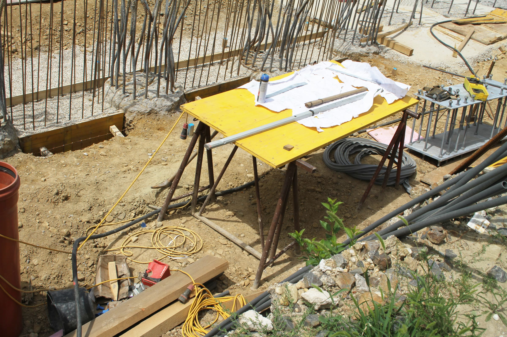
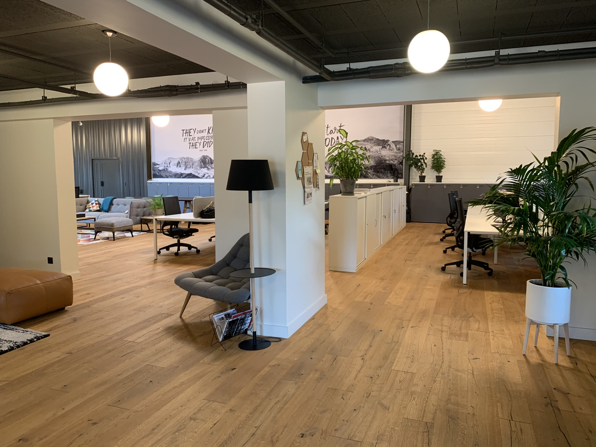

Arbeiten Sie mit uns an Infrastruktur
Wir suchen Ingenieurinnen und Ingenieure, die Verantwortung übernehmen und Projekte von der Planung bis zur Ausführung begleiten.
Beispielfoto · © Leo Miregalitheo, CC BY-SA 4.0, via Wikimedia Commons
Offene Stellen
3 offene Stellen
-
Projektingenieur Tragwerksplanung (m/w/d) – Konstruktiver Ingenieurbau
Zur Verstärkung unseres Teams suchen wir einen Projektingenieur (m/w/d) für die Tragwerksplanung im konstruktiven Ingenieurbau. Sie bearbeiten anspruchsvolle Infrastrukturprojekte und entwickeln technisch durchdachte und wirtschaftliche Tragwerkslösungen – von der statischen Berechnung und Bemessung bis zur konstruktiven Ausführungsplanung.
Projektingenieur Tragwerksplanung (m/w/d)
- Bereich
- Konstruktiver Ingenieurbau
- Standort
- Bruchsal
- Beschäftigung
- Vollzeit
- Eintritt
- ab 01.02.2027
Zur Verstärkung unseres Teams suchen wir einen engagierten Projektingenieur (m/w/d) für die Tragwerksplanung im konstruktiven Ingenieurbau. Sie wirken an anspruchsvollen Infrastrukturprojekten mit und entwickeln gemeinsam mit unserem Team technisch durchdachte und wirtschaftliche Lösungen.
Ihre Aufgaben
- Bearbeitung und Koordination von Projekten der Tragwerksplanung im konstruktiven Ingenieurbau
- Erstellung prüffähiger statischer Berechnungen und bautechnischer Nachweise
- Entwicklung und Bemessung von Tragkonstruktionen, insbesondere im Stahlbeton- und Stahlbau
- Mitwirkung bei der Entwurfs- und Ausführungsplanung von Ingenieurbauwerken
- Fachliche Abstimmung mit Auftraggebern, Fachplanern und Prüfingenieuren
Ihr Profil
- Abgeschlossenes Studium im Bauingenieurwesen, vorzugsweise mit Schwerpunkt konstruktiver Ingenieurbau
- Kenntnisse in der Tragwerksplanung und den einschlägigen technischen Regelwerken
- Sicherer Umgang mit gängiger Statik- und Berechnungssoftware
- Erste Berufserfahrung in der Tragwerksplanung ist von Vorteil
- Selbstständige, strukturierte und verantwortungsbewusste Arbeitsweise
- Teamfähigkeit, Engagement und gute Deutschkenntnisse
Wir bieten Ihnen
- Vielseitige und anspruchsvolle Projekte im Ingenieur- und Infrastrukturbau
- Eigenverantwortliches Arbeiten und fachlichen Gestaltungsspielraum
- Kurze Entscheidungswege und direkte Zusammenarbeit im Team
- Möglichkeiten zur fachlichen und persönlichen Weiterentwicklung
- Langfristige berufliche Perspektiven in einem engagierten Ingenieurbüro
Interesse geweckt?
Wir freuen uns auf Ihre Bewerbung mit Lebenslauf und relevanten Qualifikationsnachweisen.
Jetzt bewerbenoder direkt an bewerbung@ib-cc.de
-
Projektingenieur Objektplanung (m/w/d) – Verkehrsanlagen
Zur Verstärkung unseres Teams suchen wir einen Projektingenieur (m/w/d) für die Objektplanung von Verkehrsanlagen. Sie bearbeiten vielseitige Infrastrukturprojekte mit Schwerpunkt Straßen- und Schienenverkehrsanlagen und begleiten diese von der ersten Planung bis zur ausführungsreifen Lösung.
Projektingenieur Objektplanung VA (m/w/d)
- Bereich
- Verkehrsanlagen
- Standort
- Bruchsal
- Beschäftigung
- Vollzeit
- Eintritt
- ab 01.02.2027
Zur Verstärkung unseres Teams suchen wir einen engagierten Projektingenieur (m/w/d) für die Objektplanung von Verkehrsanlagen. Sie wirken an vielseitigen Infrastrukturprojekten mit und entwickeln gemeinsam mit unserem Team technisch durchdachte, wirtschaftliche und nachhaltige Planungslösungen.
Ihre Aufgaben
- Bearbeitung und Koordination von Projekten der Objektplanung im Bereich Verkehrsanlagen
- Planung von Straßenverkehrsanlagen und Eisenbahninfrastrukturmaßnahmen
- Erstellung von Entwurfs-, Genehmigungs- und Ausführungsplanungen
- Erarbeitung technischer Lösungen unter Berücksichtigung geltender Regelwerke und projektspezifischer Anforderungen
- Mitwirkung bei der Kostenplanung sowie der Ausschreibung und Vergabe von Bauleistungen
- Fachliche Abstimmung mit Auftraggebern, Fachplanern und Behörden
Ihr Profil
- Abgeschlossenes Studium im Bauingenieurwesen, vorzugsweise mit Schwerpunkt Verkehrswesen oder Infrastrukturplanung
- Kenntnisse in der Planung von Verkehrsanlagen und den einschlägigen technischen Regelwerken
- Sicherer Umgang mit gängiger CAD- und Planungssoftware
- Erste Berufserfahrung in der Objektplanung ist von Vorteil
- Selbstständige, strukturierte und verantwortungsbewusste Arbeitsweise
- Teamfähigkeit, Engagement und gute Deutschkenntnisse
Wir bieten Ihnen
- Vielseitige und anspruchsvolle Projekte im Ingenieur- und Infrastrukturbau
- Eigenverantwortliches Arbeiten und fachlichen Gestaltungsspielraum
- Kurze Entscheidungswege und direkte Zusammenarbeit im Team
- Möglichkeiten zur fachlichen und persönlichen Weiterentwicklung
- Langfristige berufliche Perspektiven in einem engagierten Ingenieurbüro
Interesse geweckt?
Wir freuen uns auf Ihre Bewerbung mit Lebenslauf und relevanten Qualifikationsnachweisen.
Jetzt bewerbenoder direkt an bewerbung@ib-cc.de
-
Projektingenieur Objektplanung (m/w/d) – Ingenieurbauwerke
Zur Verstärkung unseres Teams suchen wir einen Projektingenieur (m/w/d) für die Objektplanung im konstruktiven Ingenieurbau. Sie bearbeiten vielseitige Infrastrukturprojekte, insbesondere Brücken, Stützwände und weitere Ingenieurbauwerke, und begleiten diese von der ersten Planung bis zur ausführungsreifen Lösung.
Projektingenieur Objektplanung KIB (m/w/d)
- Bereich
- Konstruktiver Ingenieurbau / Ingenieurbauwerke
- Standort
- Bruchsal
- Beschäftigung
- Vollzeit
- Eintritt
- ab 01.02.2027
Zur Verstärkung unseres Teams suchen wir einen engagierten Projektingenieur (m/w/d) für die Objektplanung im konstruktiven Ingenieurbau. Sie wirken an vielseitigen Infrastrukturprojekten mit und entwickeln gemeinsam mit unserem Team technisch durchdachte, wirtschaftliche und nachhaltige Planungslösungen.
Ihre Aufgaben
- Bearbeitung und Koordination von Projekten der Objektplanung im konstruktiven Ingenieurbau
- Planung und konstruktive Durcharbeitung von Ingenieurbauwerken, insbesondere Brücken, Stützwänden und weiteren Infrastrukturbauwerken
- Erstellung von Entwurfs-, Genehmigungs- und Ausführungsplanungen
- Entwicklung technischer und konstruktiver Lösungen unter Berücksichtigung geltender Regelwerke und projektspezifischer Anforderungen
- Mitwirkung bei der Kostenplanung sowie der Ausschreibung und Vergabe von Bauleistungen
- Fachliche Abstimmung mit Auftraggebern, Tragwerksplanern, Fachplanern und Behörden
Ihr Profil
- Abgeschlossenes Studium im Bauingenieurwesen, vorzugsweise mit Schwerpunkt konstruktiver Ingenieurbau
- Kenntnisse in der Objektplanung von Ingenieurbauwerken und den einschlägigen technischen Regelwerken
- Sicherer Umgang mit gängiger CAD- und Planungssoftware
- Erste Berufserfahrung in der Objektplanung ist von Vorteil
- Selbstständige, strukturierte und verantwortungsbewusste Arbeitsweise
- Teamfähigkeit, Engagement und gute Deutschkenntnisse
Wir bieten Ihnen
- Vielseitige und anspruchsvolle Projekte im Ingenieur- und Infrastrukturbau
- Eigenverantwortliches Arbeiten und fachlichen Gestaltungsspielraum
- Kurze Entscheidungswege und direkte Zusammenarbeit im Team
- Möglichkeiten zur fachlichen und persönlichen Weiterentwicklung
- Langfristige berufliche Perspektiven in einem engagierten Ingenieurbüro
Interesse geweckt?
Wir freuen uns auf Ihre Bewerbung mit Lebenslauf und relevanten Qualifikationsnachweisen.
Jetzt bewerbenoder direkt an bewerbung@ib-cc.de
Derzeit ist keine Stelle ausgeschrieben
Eine Initiativbewerbung ist trotzdem jederzeit willkommen.

Beispielfoto · © Benoît Prieur, CC0, via Wikimedia Commons
Keine passende Stelle dabei?
Initiativbewerbungen sind willkommen. Schicken Sie uns Ihre Unterlagen per E-Mail und erzählen Sie, woran Sie arbeiten möchten.
Bewerbung an bewerbung@ib-cc.de
Informationen zum Umgang mit Bewerberdaten finden Sie in der Datenschutzerklärung.